The Binding of Isaac è il mio videogioco preferito, esso ha una buona grafica una storia accattivante e mi ci intrattengo qualche ora alla settimana. La cosa che mi affascina oltremodo di Isacc è il fatto che oltre ad avere una storia molto articolata e per nulla banale contiene moltissimi riferimenti come i tarocchi italiani (Da 0 a 21) e i segni dello zodiaco (Degli oggetti di diverso valore, non molto potenti in generale ma che possono sinergizzare con molti altri item).
The Binding of Isaac è un videogioco di ruolo (Arcade-rpg) realizzato da Edmund McMillen e Florian Himsl. È stato pubblicato il 28 settembre 2011.
Trama:
In The binding of Isaac il giocatore controlla la fuga di Isaac nelle cantine della propria casa fino ad uccidere vari personaggi come : la madre,satana,Isaac in versione fetale, monstro e molti altri.
La trama di The Binding of Isaac comincia con lui e la madre che vivevano da soli in una piccola casa su una collina, isaac si divertiva a disegnare e giocare, la madre a guardare le serie tv che trasmettevano, però un giorno una voce che si identificava come dio disse alla madre di Isaac che il figlio aveva l'anima corrotta ,subito la madre (dando ascolto alla voce del suo dio) gettò via tutti i giocattoli e i beni del figlio, poi però alcuni giorni dopo quella voce tornò e le disse che l'anima del figlio era ancora corrotta e quindi di ucciderlo. Isaac ascoltando quello che la madre rispondeva alla voce decise di scappare nella cantina e quindi in un secondo momento di uccidere la madre. La madre lo voleva davvero uccidere però Isaac grazie all'aiuto del suo gatto e altri oggetti travati nella cantina cercarà di uccidere la madre.
Il gioco ha finali multipli, che rendono la storia distorta e multi direzionale, sbloccabili man mano che il gioco procede e a seconda del boss sconfitto.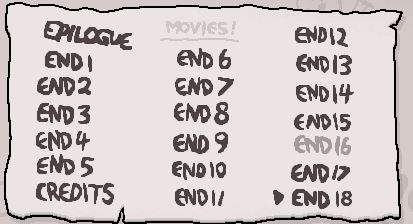
Dopo il primo completamento del gioco e dopo aver battuto di nuovo Mamma in una seconda partita, ai tre piani iniziali viene aggiunto un altro piano: il Grembo (o la sua versione più difficile, l'Utero), alla fine del quale sarà possibile scontrarsi contro il Cuore di Mamma. Sconfiggere ogni volta questo boss porta a sbloccare un nuovo finale, fino ad un massimo di dieci.
Nei primi otto finali, viene mostrato Isaac trovare numerosi oggetti dentro il baule, che verranno quindi sbloccati diventando conseguentemente trovabili ed utilizzabili in una seguente nuova partita.
Il nono finale, sbloccato dopo aver sconfitto nove volte il Cuore di Mamma, vede apparire uno strano essere alle spalle di Isaac mentre questo apre il forziere, che poi gli sorride sinistramente.
 Questo essere è chiamato It lives! (traducibile come "È vivo!") ed è una versione più resistente e difficile del Cuore di Mamma: da questo momento It lives! sostituirà perennemente il Cuore di Mamma come boss finale del Grembo/Utero. Lo stesso McMillen confermò in seguito che It lives! non è altro che Isaac stesso, in stato fetale.
Questo essere è chiamato It lives! (traducibile come "È vivo!") ed è una versione più resistente e difficile del Cuore di Mamma: da questo momento It lives! sostituirà perennemente il Cuore di Mamma come boss finale del Grembo/Utero. Lo stesso McMillen confermò in seguito che It lives! non è altro che Isaac stesso, in stato fetale.
Nel decimo finale, Isaac trova nel forziere il cadavere blu di un bambino morto per soffocamento, chiamato "eden" (comunemente identificato come "Blue baby"), il quale si rianimerà. Questo può quindi essere scelto come personaggio per una nuova partita.
Una volta ottenuti i dieci finali, sconfiggere nuovamente It Lives!, permetterà al giocatore di scegliere se continuare ad avanzare e scendere nello Sheol per lottare contro Satana o elevarsi ai cieli ed arrivare alla Cattedrale per sconfiggere una versione angelica dello stesso Isaac.
Undicesimo finale, sbloccato completando lo Sheol: Isaac apre il baule, dal quale esce una forte luce bianca. Subito dopo, la scena cambia velocemente mostrando ogni personaggio giocabile in luoghi diversi, per poi mostrare Isaac nella sua camera che entra nel baule e si chiude dentro.
Dodicesimo finale, sbloccato completando la Cattedrale: si vede Isaac che legge una Bibbia e subito dopo si guarda allo specchio; nel suo riflesso, però, è completamente nero ed ha gli occhi rossi. Credendo quindi che sia davvero un peccatore, Isaac chiude la Bibbia e guarda verso la cassa nell'angolo della sua stanza.
Tredicesimo finale, sbloccato completando il Baule: vengono mostrate alcune foto riguardo alla vita di Isaac, come suo padre che se ne va di casa o la madre con il coltello in mano. Lo schermo quindi diventa nero e viene mostrata la scritta "The End" con un baule accanto, ad indicare forse la fine di Isaac.Però anche se il tredicesimo finale scrive The End i finali di Isaac sono anche altri come Mega Satana, The Lamb e molti altri.
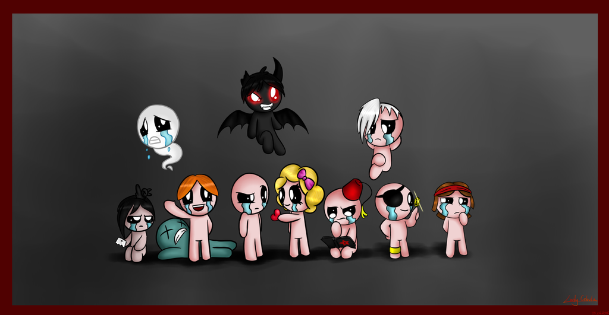
Personaggi
Isacco
Isaac il protagonista di cui conosciamo già la storia che semplicemente sta venendo importunato da Magdalene. Isacco è un riferimento alla storia biblica della rilegatura di Isacco, in cui ad Abramo è comandato da Dio di sacrificare il suo unico figlio, Isacco, al fine di dimostrare la sua lealtà e amore. Isaac inizia con tre cuori rossi e una bomba per impostazione predefinita. Edmund ha dichiarato che Isaac è mancino, ma nella scena iniziale, Isaac tiene in mano una matita con la mano destra. Questo potrebbe essere un riferimento al pregiudizio cattolico contro la mancina, derivante da Matteo 25:33 che proclama che Dio metterà coloro che meritano di ascendere in Paradiso alla sua destra e mettere quelli che meritano di scendere all'Inferno alla sua sinistra- lato della mano. La madre di Isaac avrebbe potuto costringerlo a imparare le cose nel modo "giusto" per paura che fosse "malvagio". Inizierà anche con The D6 (oggetto attivo che fa in modo di cambiare gli item nella stanza con degli oggetti casuali della stessa pool, che sarebbero delle classi con cui vengo classificati gli oggetti tipo "oroscopo") una volta sbloccato.
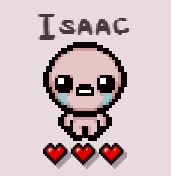
Maddalena
Maddalena è un altro personaggio di The Binding of Isaac, lei è innamorata di Isaac, Maddalena viene sbloccata quando il giocatore ottiene sette o più cuori contemporaneamente in una corsa, Maddalena inizia con quattro contenitori a cuore rosso e il Yum Heart (Oggetto attivo che quando attivato cura un cuore rosso, esso ha quattro tacche, ciò vuole dire che si ricarichera in quattro stanze completate). Maddalena è un riferimento a Maria Maddalena, una seguace di Gesù che aveva scacciato sette demoni dal suo corpo, a cui si riferivano i sette contenitori di cuore necessari per sbloccarla. È stata canonizzata come santa in diverse confessioni cristiane, e si ritiene che fosse una prostituta prima di seguire Gesù (anche se questo non ha basi testuali nella Bibbia, ed è considerata dagli studiosi un mito infondato). Nei file di gioco, il file di immagine per i capelli di Maggie è chiamato maggiesbeautifulgoldenlocks.png. I capelli di Maggy sembrano essere identici alla parrucca che Isaac riceve in uno dei suoi incubi a metà piano. È possibile che il personaggio di Maggy potrebbe essere Isaac che indossa una parrucca.
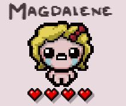
Giuda
Giuda è il ragazzo che sta leggendo il libro con la stalle satanica incisa sopra e il cappellino rosso, egli è un personaggio sbloccabile dopo aver sconfitto Satana per la prima volta. Giuda inizia con un cuore rosso, ma ha il Libro di Belial (questo è un attivo che aumenta il danno per una stanza con tre tacche) all'avvio e 3 monete. Giuda è un riferimento a Giuda Iscariota, il dodicesimo discepolo di Gesù Cristo. Giuda tradì Gesù ai Romani in cambio di trenta pezzi d'argento, rappresentati dalle tre monete con cui Giuda inizia il gioco. Inoltre, si ritiene che le monete rappresentino anche le tre fedi abrasive, ebraismo, cristianesimo e islam.
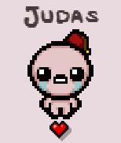
Caino
Cain, o Caino è il personaggio che sta giocando con una moneta. Caino viene sbloccato quando il giocatore è in possesso di cinquantacinque o più monete contemporaneamente in una corsa. Comincia con due cuori rossi, il piede fortunato (un item non attivo che fa in modo i avre più fortuna) e una chiave (Oggetto molto importante poichè tutte le stanze del tesoro, cioè quelle che contengono oggetti "gratis" necessitano di una chiave). Caino è un riferimento alla storia biblica di Caino e Abele, in cui Caino commette il primo omicidio uccidendo Abele, Abele appare anche come oggetto.
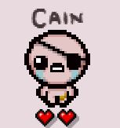
Sansone
Sansone è il pesnaggio che sta pensando vicino a Cain, Sansone viene sbloccato quando il giocatore sconfigge due piani di fila senza subire danni. Samson inizia con 3 cuori rossi e Bloody Lust (un oggeto che quando prendi danno ti aumenta il danno, l'aumento non è considerevole però molto utile, questa cosa però non è comulativa, nel senso che ad ogni piano Sansone avra il danno base un eventuali damage up fissi). Nella Bibbia, Sansone era un guerriero soprannaturalmente forte che derivava il suo potere dal suo voto nazireo, conferendo immensa forza a Sansone se non si fosse tagliato i capelli.
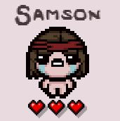
Apollyon
Apollyon è il personaggio che svolazza sulla destra. Apollyon è un personaggio aggiunto in Afterbirth †. Apollyon inizia con due cuori rossi e Void , un oggetto a sei tacchette che distrugge gli oggetti e fornisce in cambio dei bonus. Esso viene sbloccato sconfiggendo Mega Satan per la prima volta. Apollyon è il nome greco dell'angelo Abaddon ed è anche conosciuto come "The Destroyer". Ciò si riflette nel pop-up Achievement, che afferma "You Unlocked The Destroyer". (Purtroppo non avendolo mai utilizzato poichè non ho ancora scofitto mega satana ho poche informazioni).
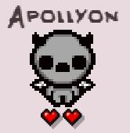
Azazel
Azazel è il personaggio nero con le ali che vola al centro. Azazel è un personaggio di The Binding of Isaac: Rebirth sbloccato facendo tre accordi con il diavolo in una corsa. Azazel inizia con una versione a corto raggio di Brimstone (un oggetto potentissimo che lancia un raggio verso la direzione in cui si sta sparando caricandolo come se fosse un anormale lacrima), l'abilità di volare, la carta 0 - Il Matto (come ho già detto è rierimento ad i tarocchi italiani) e tre cuori neri senza normali cuori rossi che però a differenza di "???"(un altro personaggio) puoò prendere. Nella Bibbia, Azazel è il nome dato alla capra che è stata gettata in natura come parte dei rituali di espiazione ebraica. Tuttavia, in alcune tradizioni delle religioni abramitiche, Azazel si riferisce all'angelo caduto che insegnò alle persone a fabbricare armi e gioielli e insegnò alle donne "l'arte peccaminosa" di dipingere i loro volti, come menzionato nell'apocrifo Libro di Enoch. Azazel è menzionato tre volte nella Bibbia; questo potrebbe essere il motivo per cui si genera con tre cuori neri. La salute iniziale di Azazel è elencata come "-1" nella schermata di selezione del personaggio.
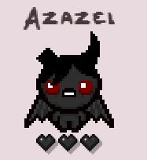
The Lost
The Lost è un personaggio segreto di The Binding of Isaac: Rebirth .The Lost inizia senza salute e non può ottenere salute in alcun modo. Pertanto, morirà per qualsiasi colpo. The Lost inizia con il volo , Aggiunto in Afterbirth lacrime spettrali , D4 (un semplice reroll di nemici della stanza, se sbloccato) e Holy Mantle (detto anche Holy shield è un oggetto che permetti a qualsiasi personaggio di poter non conteggiare un danno preso per stanza, se sbloccato e dopo aver donato 879 monete alla Greed Machine). The Lost può prendere le offerte del diavolo gratuitamente e attivare il pulsante in modalità Avidità senza subire danni. The lost è l'anima di Isaac che vaga nel mondo.
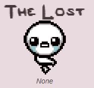
Lazzaro
Lazzarus, o Lazzaro è il persnaggio biondo al finaco di Isacc. Lazzaro viene sbloccato quando il giocatore ha quattro o più cuori dell'anima (o cuori neri) contemporaneamente durante una corsa. È un nuovo personaggio di The Binding of Isaac: Rebirth. Comincia con tre cuori rossi e una pillola a caso. Ha Portata e Fortuna leggermente inferiori rispetto a Isaac, ma ha anche 1 vita extra all'inizio del gioco. La sua forma rianimata ha aumentato le statistiche di base, con danni, velocità e portata sopra la media. Anche se a corto di salute, le sue statistiche migliorate controbilanciano bene questa debolezza. Lazzaro è un riferimento a Lazzaro di Betania . Nella Bibbia, Lazzaro di Betania fu risuscitato da Gesù 4 giorni dopo la sua morte. Ecco perché Lazzaro si genera con 1 punto vita in più.
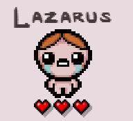
???
??? è il pesonaggio "morto" di colore blu , Noto anche come il Baby Blue , è un personaggio sbloccato sconfiggendo Cuore di mamma dieci volte. Si inizia con tre cuori anima , e il suo metro di salute è unica in quanto egli non può ottenere rosse contenitori di cuore. Se un oggetto gli conferisce un contenitore a cuore rosso (incluso uno vuoto), aggiunge invece un cuore dell'anima. Il soprannome comune di Blue Baby è un riferimento alla sindrome del bambino blu , in cui la carnagione della pelle di un bambino appare blu a causa della mancanza di ossigeno nel sangue a causa di un difetto cardiaco congenito. A differenza di molti altri personaggi, ??? non appare nella Bibbia o in nessuna scrittura religiosa.
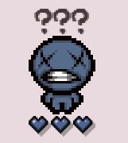
Eve
Eva è il pesonaggio che guarda male Lazarus. Eva è un personaggio sbloccato battendo due piani di fila senza collezionare alcun cuore. Eva inizia con due cuori rossi , Babilon(aumenta i danni di 1,5 e la velocità di 0,3 mentre il personaggio ha metà del cuore rosso o meno) e death bird (subire danni evoca un familiare che insegue i nemici per il resto della stanza attuale, infliggendo quattro danni al secondo). Subire danni evoca un familiare che insegue i nemici per il resto della stanza attuale, infliggendo 2 danni per tick o 4 danni al secondo.

Lilith
Per ultimo ma non meno importante abbiamo Lilith. Lilith è un personaggio aggiunto nell'espansione The Binding of Isaac: Afterbirth. Lilith inizia con un cuore rosso e due cuori neri. Gli oggetti di partenza di Lilith sono Box of Friends (attivo con 4 tacchette che fa in modo di raddoppiare i minion) , Incubus (minion che prende gli effetti di tutti gli oggetti presi e che spara lacrime al posto del personaggio, esso funge semplicemente da minion che spara anche se è un po' difficile da manovrare) e Cambion Conception (dopo aver subito un danno un certo numero di volte, Isaac ottiene un minion demoniaco permanente). Lilith è permanentemente bendata , il che significa che non ha la possibilità di sparare lacrime; invece infligge danni con l' incubo familiare che la segue. Lilith è il nome ebraico per una figura della mitologia ebraica, che si pensa derivi dalla prima classe di demoni femminili. In alcune culture, Lilith è la donna originale che Dio ha creato prima di Eva. Si rifiutò di diventare sottomessa ad Adamo e lasciò Eden; in altri, viene raffigurata come la rovina dell'umanità quando Adamo la rifiuta, spingendola a maledire tutti i suoi discendenti e prendendo di mira i bambini con rancore.
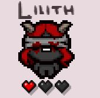
The Forgotten
Questo personaggio segreto è, come vedete, uno scheletro che utilizza come arma un osso che può essere lanciato a breve o lunga distanza. Schiacciando ctrl si può scindere l'anima dal corpo così che il corpo non possa subire danni. Nel caso in cui ,invece, i mostri avversari riescano a esaurire i cuori il gioco finirebbe. L'ultima possibilità di far sopravvivere il personaggio è quella di convertire da anima a corpo in modo tale che nel momento in cui il personaggio riesca ad incorntrare un nuovo cuore blu o nero potrà essere riabilitato completamente. The forgotten non può ricevere dei cuori normali ma solo cuori scheletrici , questi sono cuori che a differenza di un cuore normale sono più duraturi poichè può subire più danni, però non è più utilizzabile una volta finito. The Forgotten e The Soul condividono una barra della salute, quindi ogni forma ha un massimo di 6 cuori invece dei normali 12.
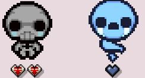